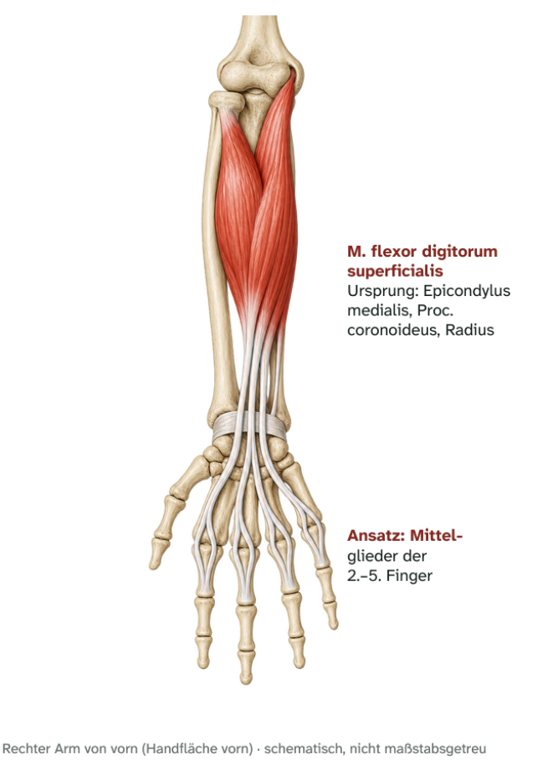

Unterarm vorn · mittlere Schicht
M. flexor digitorum superficialis
Oberflächlicher Fingerbeuger – Ursprung, Ansatz, Innervation und Funktion

Steckbrief
Caput humeroulnare
- Ursprung
- Epicondylus medialis humeri, Processus coronoideus
Caput radiale
- Ursprung
- Radius (Vorderfläche)
Gemeinsam
- Ansatz
- Mittelglieder der Finger 2–5
- Innervation
- N. medianus (C8–Th1)
Funktion
- Finger 2–5: Beugung im Mittel- und Grundgelenk.
- Handgelenk: unterstützt die Palmarflexion.
Zum Lernen

E-Book · Band 2 · 19,90 €
Muskel-Atlas Schulter & Arm
Im E-Book findest du zu diesem Muskel außerdem:
- Merkhilfe und typische Prüfungsfalle
- Muskelfunktionstest, Längentest und Übungen per Video-QR-Code
- Dehn- und Kräftigungsübung
- Kurz-Check mit drei Fragen und Lösungen
Weitere Muskeln: Unterarm vorn: Beuger
- 20VideoM. pronator teresRunder Einwärtsdreher · Unterarm vorn: Beuger
- 21VideoM. flexor carpi radialisSpeichenseitiger Handbeuger · Unterarm vorn: Beuger
- 22VideoM. palmaris longusLanger Hohlhandmuskel · Unterarm vorn: Beuger
- 23VideoM. flexor carpi ulnarisEllenseitiger Handbeuger · Unterarm vorn: Beuger
- 25VideoM. flexor digitorum profundusTiefer Fingerbeuger · Unterarm vorn: Beuger
- 26TextM. flexor pollicis longusLanger Daumenbeuger · Unterarm vorn: Beuger
- 27VideoM. pronator quadratusViereckiger Einwärtsdreher · Unterarm vorn: Beuger